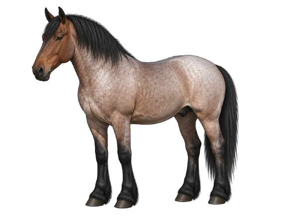

Reddish-Brown
Reddish-BrownChestnut
A warm reddish-brown body coat with a mane and tail that are the same shade or lighter — never black. One of the most common horse colors in the world.
Horse coat colors can seem like a lot at first — but once you know what to look for, they become easy to recognize. This lesson walks through the five main color groups so you can identify them with confidence.
The quickest way to identify a horse's color is to look at three things: body color, mane and tail color, and leg color. Those three details will point you to the right answer almost every time. Use the tabs below to work through each color group.
Chestnut, black, and bay are the three genetic base coat colors. Every other horse color is a variation, dilution, or pattern built on top of one of these three. Learning to recognize them first makes every other color much easier to identify.
These colors range from bright copper-red to deep reddish-brown. The key thing to look for: the mane, tail, and legs all stay in the same warm reddish family as the body — you'll never see black anywhere on a chestnut horse.
Reddish-BrownA warm reddish-brown body coat with a mane and tail that are the same shade or lighter — never black. One of the most common horse colors in the world.
 Copper-Red
Copper-RedA lighter, brighter copper-red coat with a flaxen or matching mane and tail. Common in stock breeds. Often used interchangeably with chestnut, though sorrel typically refers to a lighter, more golden-red tone.
 Dark Chocolatey Brown
Dark Chocolatey BrownA very dark, deep reddish-brown coat — almost chocolatey in appearance. The mane and tail remain within the same dark brown family, without any black. The darkest variation of the chestnut color.
 Reddish Body, Pale Mane
Reddish Body, Pale ManeA chestnut horse with a noticeably lighter — flaxen, cream, or white — mane and tail while the body coat stays reddish. The pale mane and tail against a warm body coat make this one easy to spot.
Black and bay both have black somewhere on the horse — the difference is where. Look at the body color first, then check the mane, tail, and legs. That combination will tell you which one you're looking at.
 Solid Black
Solid BlackA true black horse has a solid black body coat, black mane, black tail, and black legs with no reddish or brown tones. True black horses are less common than they appear — many horses described as black are actually very dark bay or brown.
 Brown Body, Black Points
Brown Body, Black PointsA reddish-brown body coat with a black mane, tail, and lower legs — called black points. The body can range from light tan to dark reddish-brown, but the black points are always present and are the defining feature of bay.
Palomino and buckskin are two of the most commonly confused colors — both are golden, but they look different once you know what to check. The mane, tail, and legs are the quickest way to tell them apart.
Both palomino and buckskin have a golden body — look at the mane, tail, and legs to tell them apart.
 Golden Body, White Mane
Golden Body, White ManeA golden body coat — ranging from pale cream-gold to rich honey gold — with a white or very light mane and tail. The white or cream mane and tail are the defining feature.
 Golden Body, Black Points
Golden Body, Black PointsA golden or tan body coat with a black mane, tail, and lower legs. The black points are what set buckskin apart from palomino — same golden body, completely different mane and tail color.
Gray horses are not born gray — they're born with another color and gradually lighten throughout their lives. The same horse can look nearly black as a foal, show dapples as a young horse, and be almost completely white by the time it's older.
This is one of the things that makes gray tricky to identify — the color looks different depending on the horse's age. Knowing the stages helps a lot.
💡 Important Distinction
Gray horses are often mistaken for white — but there's an easy way to tell them apart. A gray horse is born with color and lightens over time. A white horse is born white and stays white. If you can check the skin around the muzzle, gray horses have dark skin while true white horses have pink skin.
Gray horses follow a predictable pattern as they age — learning the stages makes them much easier to recognize.
Born with their base color — may appear black, bay, or chestnut. Gray hairs begin appearing around the eyes and muzzle first.
Distinctive dapples — rings of lighter and darker grey — often appear across the body as the coat continues to lighten unevenly.
The coat continues lightening until it appears predominantly grey or nearly white. May show flea-bitten speckling in later years.
 Mixed White & Colored Hairs
Mixed White & Colored HairsA mix of white and colored hairs across the body, producing an overall grey appearance. Can range from dark steel grey to near-white — the shade depends on the horse's age.
 Intermediate Stage
Intermediate StageA gray horse in the dappling stage — showing circular patterns of lighter grey surrounded by slightly darker grey across the body, particularly over the hindquarters and back. Dapples typically disappear as the horse continues to lighten.
 Later Stage
Later StageA predominantly white or light grey coat flecked with small specks or clusters of pigmented hairs — usually chestnut, bay, or grey. These "flea bites" commonly appear in older gray horses after the coat has lightened nearly completely.
 Early Stage
Early StageA gray horse in the early stages of lightening, where the process has begun over a chestnut or reddish base coat. The result is a warm pinkish-grey tone that gives the coat a distinctly rosy appearance before it continues to lighten with age.
A roan horse has white hairs mixed evenly throughout its body coat, giving it a frosted or "salt and pepper" look. Unlike gray horses, roans don't keep lightening as they age — the color stays roughly the same throughout their life.
The most reliable way to identify a roan: the body coat looks mixed, but the head, mane, tail, and lower legs stay solid. That solid head is the biggest visual clue.
💡 Roan vs. Gray
This is one of the most common identification mistakes. Both roan and gray horses have white hairs mixed into a colored coat — but they behave very differently. A roan horse does not change significantly over time and has a solid-colored head. A gray horse progressively lightens with age and the white hairs spread across the entire body including the head.
The name of a roan comes from its body color — what you see underneath the white mixing.
 Chestnut Base
Chestnut BaseA chestnut or sorrel base coat with white hairs mixed evenly throughout, creating a pinkish-red or strawberry appearance. The head, mane, tail, and lower legs remain the chestnut base color without white mixing.
 Black Base
Black BaseA black base coat mixed with white hairs, producing a cool blue-grey body appearance. The head, mane, tail, and legs stay black. Despite the name, blue roan horses are not actually blue — the name describes the bluish-grey effect of black and white hairs mixed together.

Bay BaseA bay base coat mixed with white hairs throughout the body, producing a warm reddish-grey appearance. The black points — mane, tail, and lower legs — are retained, distinguishing bay roan from strawberry roan. Follows the same roan pattern rules as the other roan types.
Individual white hairs are evenly distributed through the body coat — not in patches, but mixed consistently throughout.
The head, mane, tail, and lower legs typically remain the base color without white mixing — a key feature that separates roan from gray.
Unlike gray horses, roans do not progressively lighten. The coat stays relatively consistent in color throughout the horse's life.
Some roan horses appear darker in winter and lighter in summer as the coat sheds and regrows — but this is seasonal, not progressive aging.
Pinto and Appaloosa are two of the most visually distinctive horse coat patterns — large areas of white or spots that make them immediately recognizable. Both are patterns on top of an underlying color, not colors on their own.
Pinto = large white patches over a colored coat. Appaloosa = spots, usually over the hindquarters or across the whole body.
Pinto horses have large irregular white patches over their body. The two most common pinto patterns — tobiano and overo — look noticeably different from each other. The easiest way to tell them apart is where the white patches are and whether they cross the horse's back.
 Pinto Pattern
Pinto PatternWhite patches cross the topline (back and hindquarters) and the legs are often white. The head is usually the base color or has normal face markings. White patches tend to have smooth, rounded edges. Tobiano is the most common pinto pattern.
 Pinto Pattern
Pinto PatternWhite patches spread horizontally from the belly upward and rarely cross the topline. The legs are often darker. The face frequently shows bold white markings or a bald face. White patches have irregular, jagged edges and an overall "splashy" appearance.
Appaloosa horses have distinctive spotted coats that are easy to recognize once you know what to look for. Beyond the coat pattern itself, Appaloosas often show three additional clues: speckled skin around the muzzle and eyes, visible white around the iris, and striped hooves.
 Appaloosa Pattern
Appaloosa PatternA mostly white body coat covered in dark spots of various sizes — similar in appearance to a leopard's coat. Spots are usually dark and rounded. The most visually striking Appaloosa pattern.
 Appaloosa Pattern
Appaloosa PatternA solid-colored body with a distinct white patch (blanket) over the hindquarters. The blanket may contain dark spots within it (spotted blanket) or be solid white (white blanket). The most common Appaloosa pattern.